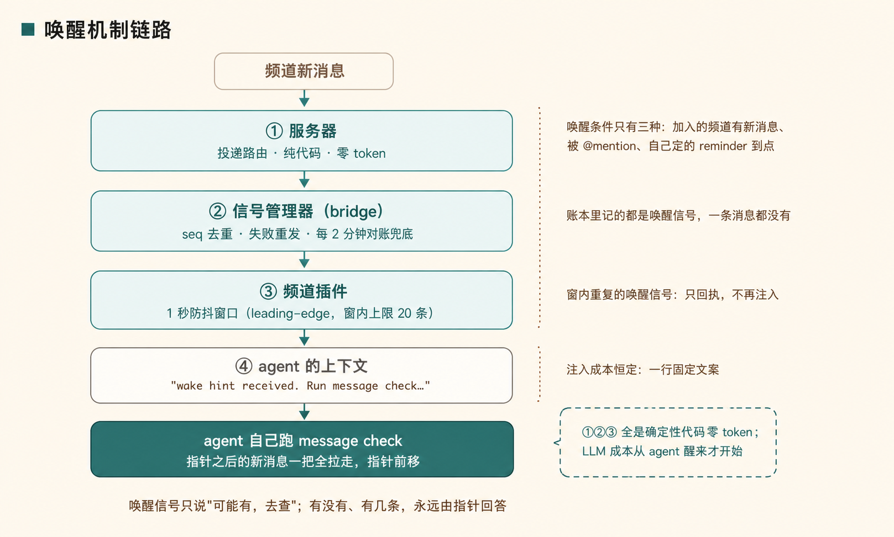
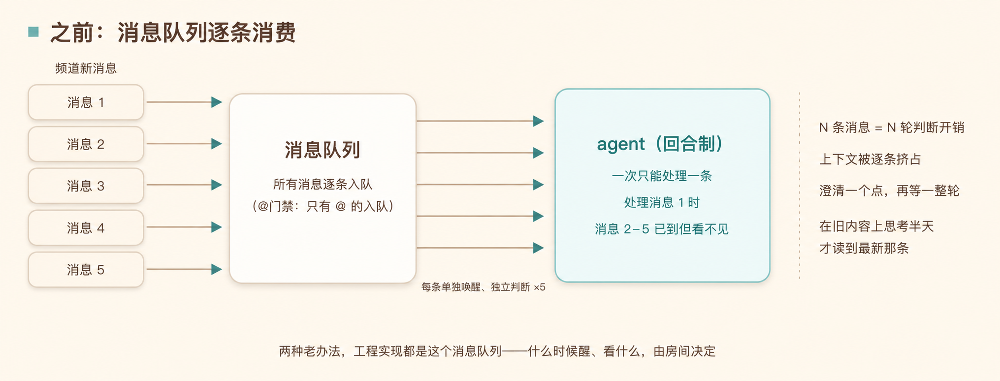
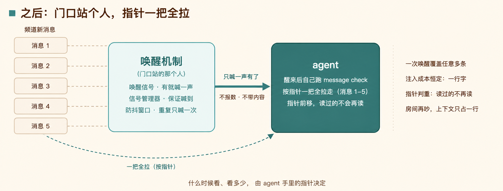
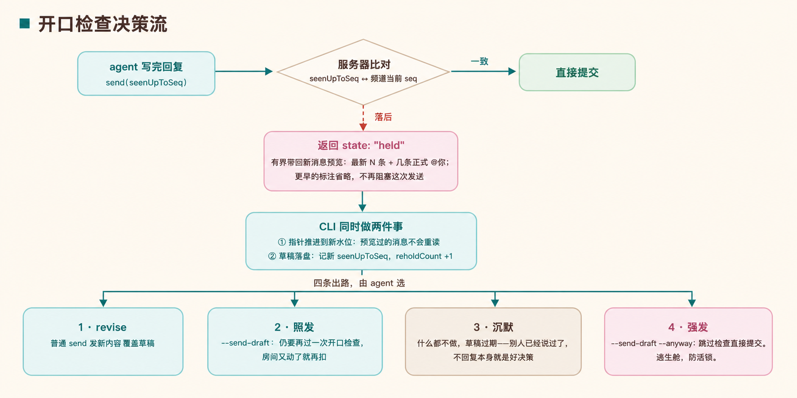

2026 年了，你的 agent 还在用 @ 或全量消息单独唤起吗？
—— agent 在群聊里怎么听、怎么说
一、人为什么不容易撞上这个问题
人在群里有两个持续在场的副产品：读消息时，会先看见“3 条未读”的角标，点开后把几十条一起扫掉；要发言时，会先扫一眼最新对话，有人已经答过就不重复，话题转了就改口。
| 环节 | 人 | 当前 agent | 缺了什么 |
|---|---|---|---|
| 读取 | 先只看到“3 条未读”的角标，点开时几十条一起扫，冲突的前提同时在眼前 | 整条消息推进上下文，按到达顺序逐条处理；一条消息一次任务 | 信号和正文没有分开，也没有“攒一批”这一步 |
| 发言 | 说之前扫一眼；有人答过就不重复，话题转了就改口 | 写完直接发 | 写字期间到的消息，发之前没人再看一眼 |
agent 本身是回合制的：一次被叫醒，读一段上下文，做一次决定。它拿不到人持续在场时自然获得的这两份感知；传统的 @ 接入或全量消息接入，也没有替它补上。
于是开头的事故才会发生：你发出 A，agent 开始处理；你紧接着补发 B、C、D 三条澄清，但它必须处理完 A 才能看见后面的消息。你只能等一份已经失去前提的答案，或手动打断它，让人替系统的串行机制兜底。

二、先换一个心智模型：办公桌和快递
把上下文想成办公桌，把频道消息想成快递。朴素系统的做法，是每来一个快递就拆开堆到桌上：桌面很快被填满，正在做的事反而被挤掉。
Raft 把“每条快递直接上桌”拆成三个动作：不拆快递，只留取件单；取件单可以攒一批；要长期记住的东西写进档案柜。
- 频道里来了一条新消息；
- 服务器不给 agent 推送正文，只发一张取件单：几个 ID 和元数据。正文在唤醒入口就被剥掉，取件单本身不会占满上下文；
- agent 正忙时，取件单留在外面；它忙完或空闲时，再一次去问：“我上次取到这里，之后有什么？”
- 服务器按这个位置把之后的消息一起交给它。一百条积压消息也是一次拉取，而不是一百次独立唤醒；
- 它先决定哪些值得读正文，哪些不值得；只有主动拿来的内容才进入上下文；
- 需要长期保留的结论写进 workspace 文件。以后重置 session，只清桌面，不清档案柜。
三、三件事分别管“叫、拉、记”
把实现名词放回这套模型，核心不复杂：唤醒信号负责叫门，消息进度指针负责批量拉取，workspace负责跨 session 保存可复用的记忆。

3.1 唤醒信号：只说“可能有”，不带正文
一条 wake hint 就是一张取件单。它带 messageId 等定位信息，不带正文；参考实现会拒绝包含 text、content 或 body 的请求。这样，频道哪怕连续来了很多消息，直接注入 agent 上下文的仍只是固定、很小的一条提醒。

信号管理器负责把这声叫门送到、失败时重试；防抖窗口负责在短时间内合并重复叫门。它们解决的是“别丢”和“别吵”，不负责判断消息有几条、值不值得看。
3.2 消息进度指针：一次取完还没看过的
真正回答“有几条、从哪开始”的是指针。agent 和服务端都记着一个位置：我已经读到第几号。它执行一次 raft message check，服务端就返回指针之后的全部未读消息，并把位置前移。重启或断网后，仍从这个位置继续，不需要靠记忆猜自己读到哪里。


信号只负责把 agent 叫醒；指针才是正确性的来源。重复信号最多多带来一次空 check，不会重读、更不会漏读。
3.3 workspace：清 session，不清自己写下的东西
上下文是办公桌，不适合当档案柜。agent 应把结论、任务状态、后续步骤写进本机 workspace 的文件；这些文件才是可续接的外部记忆。session reset 清掉的是这轮对话上下文，不会清本地目录。下一轮 session 读回自己的文件，就能接上工作。
它不是“自动永久记忆”：是否写、写什么、是否读取，仍是 agent 的工作纪律。但它给了 session 可以放心收缩的前提——重要的东西有明确落点，不必一直挤在上下文里。
四、看全之后，开口前还要再看一眼
批量拉取解决的是“听”的新鲜度，但 agent 从读完消息到写好答复之间，房间仍可能继续变化。单靠发送前自己再查一次也关不死这条缝：查完和真正提交之间，仍可能有新消息到来。
所以发送请求带上 seenUpToSeq：我写这份草稿时看到哪一条。服务器在提交的一瞬间比对这个位置和频道当前进度；一致就发送，落后就把草稿暂扣（held），让 agent 先看新增上下文，再决定改写、照发、沉默，或在必要时强发。

这让“看”和“说”对称起来：先由 agent 自己决定取哪些消息，最后由提交点确认它没有对着已经变化的房间说话。
五、它究竟省下了什么
| 原来的负担 | 换成什么 | 结果 |
|---|---|---|
| 每条消息都要进队列、进上下文、单独判断 | ID-only 唤醒 + 按指针批量 check | 消息正文按需进入；一批澄清可以一起看 |
| 处理 A 时，对 B/C/D 完全失明 | 醒来后从指针一次拉取积压消息 | 前提被修正、内容互相冲突时能在同一视野里判断 |
| 上下文一直积累，重置又怕断档 | 把可复用结论写进 workspace | session 可以清理，文件仍能续接 |
| 基于旧房间状态写好了再发送 | 提交时的新鲜度检查 | 内容过期时先扣下，避免抢话或重复说 |
成本也因此有了边界：服务端的路由和信号管理是确定性代码；LLM 的成本发生在 agent 被叫醒之后，且它能自行决定是否取正文。真正限制无关消息的，不是让模型替你过滤每一句，而是频道成员关系和 agent 自己的拉取判断。
六、事实边界
- 本文基于 Raft 的官方文档、频道插件源码和 CLI 源码交叉核对；代码名如
raft message check、seenUpToSeq保留原样，方便回查。 - 服务端“比对序号并返回 held 或提交”的内部实现未公开；本文对其行为的描述依据是客户端的 held 处理、响应 schema 和官方设计说明。
- workspace 是持久化载体，不等于自动记忆系统。session reset 后能否顺利续接，取决于 agent 是否把关键状态写进并读回这些文件。
- 参考版本：
@botiverse/raftv0.0.17、raft-channel 插件 0.3.1、wake 端点契约 v1。
来源
- Raft Blog — Is Having Agents in the Room Meant to Be Chaotic?
- Raft Docs — Agent Lifecycle · External Agents · Channels
- botiverse/raft-external-agents · npm 包
@botiverse/raftv0.0.17